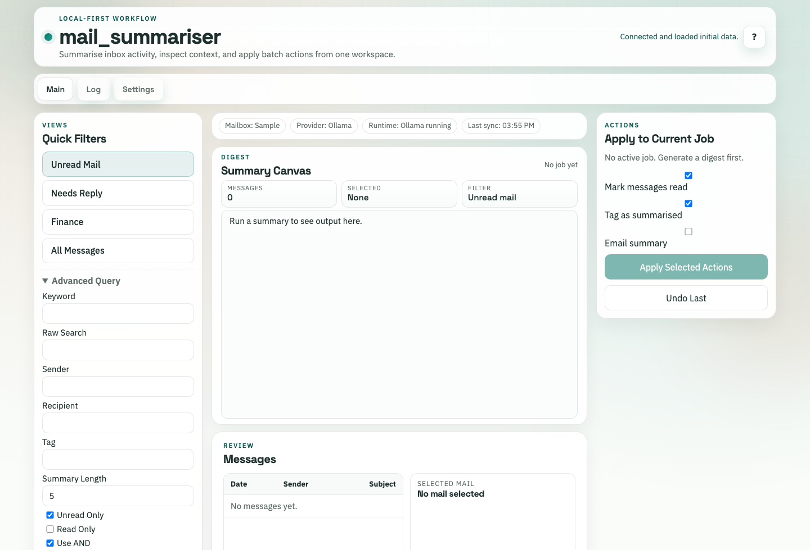
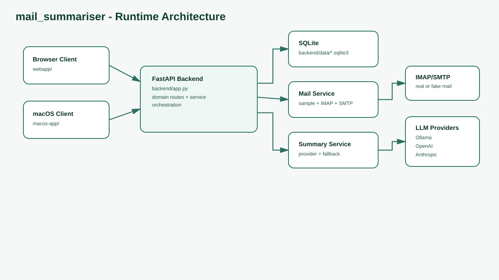
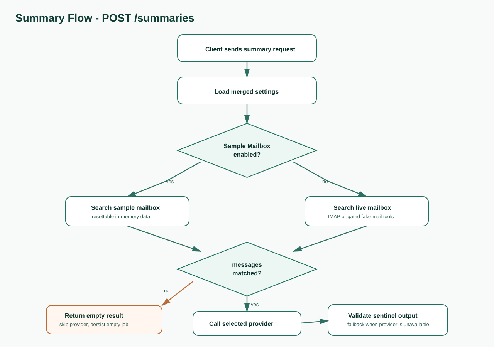

Task-first browser workspace
Quick filters, digest output, message review, and scoped actions share one operational surface.

A local-first email workflow for searching a mailbox, generating grounded summaries, reviewing message context, and applying reversible follow-up actions.
Start safely with the resettable Sample Mailbox, then switch to live IMAP/SMTP when the account settings are ready.
Quick filters, digest output, message review, and scoped actions share one operational surface.
Empty searches skip LLM providers and return an explicit no-message state instead of ungrounded text.
Use Ollama locally, OpenAI, Anthropic, or deterministic fallback summaries when providers are unavailable.
Mark read, tag summarised, email summaries, inspect logs, and undo supported actions from the same job.
The web UI is a static app that talks to the local FastAPI backend. It preserves manually selected backend targets and keeps developer fake-mail tools gated.
The SwiftUI client shares the backend API and user-facing Sample Mailbox language, so browser and desktop setup flows stay aligned.
Loading release metadata from GitHub...
Apple Silicon backend archive and native app zip.
Backend archive macOS appx64 backend tarball for local service deployment.
Download tar.gzx64 backend zip for Windows local service use.
Download zipSource archives for the latest release tag.
Source zip Source tar.gzThe backend is the system of record for settings, mailbox access, summaries, logs, and runtime model controls.


Start the backend, serve the static browser client, and use the Sample Mailbox for a safe first summary.
./start_backend.sh
python -m http.server 8000 --directory webapp